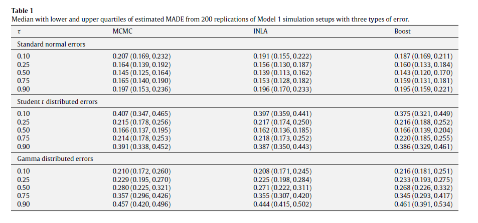
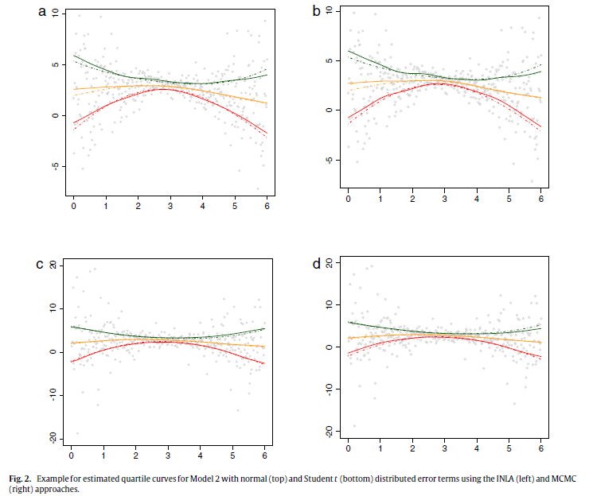

Bayesian inference for additive mixed quantile regression models
Example
李鹏翔
14720065
5.1. Simulation studies
- 1. 三个目的
- 验证ALD分布的adequacy
- 比较俩种不同的STAQ模型推断方法：MCMC和INLA
- 与Boost方法作比较
- 2. 二个模型 \[ y_{i}=0.4u_{i}+0.5\sin(2.7u_{i})+1.1/(1+u_{i}^{2})+\varepsilon_{i},u_{i}\in [-3,3] \] \[ y_{i}=2+sin(2u_{i}/3)+0.5(1+(u_{i}-3)^{2})\varepsilon_{i},u_{i}\in [0,6] \] 固定观测数n=400,通过假设误差项服从不同的分布，我们来观察不同分布下对应的不同的分位数函数的图像。
par(mfrow=c(1,2))
t <- c(0.1,0.25,0.5,0.75,0.9)
color <- c("red","blue","yellow","pink","green")
x <- seq(-3,3,length.out=400)
y <- 0.4*x + 0.5*sin(2.7*x) + 1.1/(1+x^2) + rnorm(400)
plot(x, y)
for(i in 1:5){
z <- c()
z <- 0.4*x + 0.5*sin(2.7*x) + 1.1/(1+x^2) + qnorm(t[i])
lines(x, z, type="l", col=color[i]) }
u <- seq(0,6,length.out=400)
q <- 2 + sin(2*u/3) + 0.5*(1+(u-3)^2)*rnorm(400) plot(u,q)
for(i in 1:5){
m <- c()
m <- 2 + sin(2*u/3) + 0.5*(1+(u-3)^2)*qnorm(t[i])
lines(u,m,type="l",col=color[i]) }
Fig 1

performance
1.对于每一次模拟的数据集，我们分别用MCMC方法和INLA方法对不同分位数下的STAQ模型进行估计，并与自助模型进行比较。选择CRW2模型作为两种方法的函数先验，选择离散的gamma分布(a=1,c=0.001)作为精度参数的先验。 \[ MADE=\frac{1}{n}|Q_{k}(\tau|u)-\widehat{Q_{k}}(\tau|u)|,k=1,2, \]
2.计算绝对值偏差的均值(MADEs),并重复试验200次，根据所得结果来评价估计的效果。 Fig2展示了误差项分别服从正态和t分布时，估计的分位数曲线。Fig3展示了俩种估计方法得到的后验样本的直方图。
3.Table3 比较了俩种方法在不同的样本大小下计算的时间。
4.当估计比较极端的分位数时，MCMC方法表现要逊于INLA。当模拟的样本大小少于400时，例如，我们计算了当n=100和250，MADE的结果和n=400时表现结果相似，尽管值比较大。
Table 1

Table2 and Table 3

Fig2

Fig3

- Conclusion
- (i)对于贝叶斯非参数回归推断来说，假设似然函数是ALD是合适的。
- (ii) STAQ模型的performance是具有竞争性的。
- (iii) INLA提供了一种相当好的近似方法。
5.2. Munich rental guide
我们来分析2003年Munich租金的数据集，响应变量 \(y_{i}\) 是公寓租金，协变量有空间
位置(\(u_{i}\)),地板空间大小(\(size_{i}\)),建造日期(\(year_{i}\))以及不同的指示变量。数据集由2035个观测组成。响应变量是偏斜异质性分布的事实表明，用分位数回归拟合是合适的。

geoadditive model
对于第$\tau$个分位数回归，我们建立一个空间可加模型： \[ \eta_{\tau i}=x_{i}^{T}\beta_{\tau}+f_{\tau1}(size_{i})+f_{\tau2}(year_{i})+f_{\tau3}(u_{i}) \]
其中 \(x_{i}\) 代表13个维度的类别型协变量，函数 \(f_{\tau 1}\) 和 \(f_{\tau 2}\) 是关于地板大小和建造时间的非线性函数，函数 \(f_{\tau 3}\) 代表着空间效应模型(基于Munich地区离散的空间信息)
用INLA方法估计三个分位数模型(\(\tau=0.25,0.5,0.75\)),其中的调节参数\(\gamma=2\),超参数\(a=1,b=0.001\).我们将看到，分位数推断可以观察到一些均值回归看不到的有用信息。
Fig.4

information
仔细观察fig.4.,对比 \(\tau=0.75\) 和 \(\tau=0.25\) 时的租金关于year和floor size的分位数图像，你发现了什么？你可以解释其中的原因吗?
可以用你的话描述空间位置影响租金的图像吗？
Table5 是用INLA估计得到的参数值，解释一下随着$\tau$的增大，变量Keine.Zh和Kein.Badkach为什么有显著的增长以及变量Keine.Www却下降了。
Final remarks
1.对于可加混合模型，我们提供了两种推断方法，并通过模拟研究考虑了两种方法的精确性和计算效率
2.Munich rental 的例子显示了我们STAQ模型的有效性。
3.需要指出的是，用此模型去估计极端的分位数是困难的。
4.未来我们可以研究用STAQ模型来对计数和两变量的数据进行分位数推断。
Appendix
library(INLA)
data(Munich)
g <- system.file("demodata/munich.graph", package="INLA")
formula <- rent ~ f(location, model = "besag", graph.file = g,
param = c(1,0.001)) +
f(year, model="crw2", values = seq(1918,2001), param = c(1,0.001)) +
f(floor.size, model = "crw2", param = c(1,0.001)) +
Gute.Wohnlage + Beste.Wohnlage + Keine.Wwv + Keine.Zh +
Kein.Badkach + Besond.Bad + Gehobene.Kueche +
zim1 + zim2 + zim3 + zim4 + zim5 + zim6 -1
mod <- inla(formula, data = Munich, verbose = T, family = "laplace",
control.family =list(alpha = 0.5, gamma = 2, epsilon = 0.01),
control.predictor = list(initial = 12),
control.inla = list(h = 1e-3))